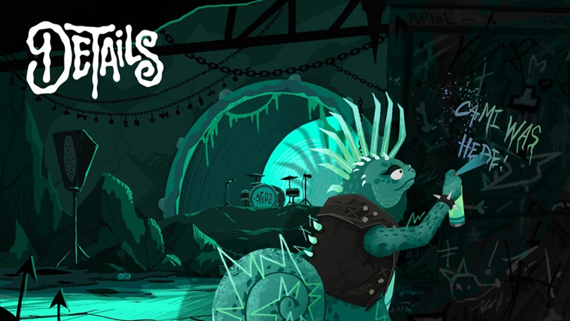
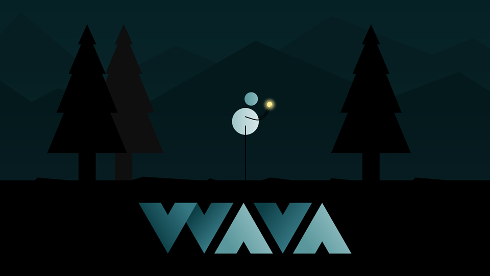
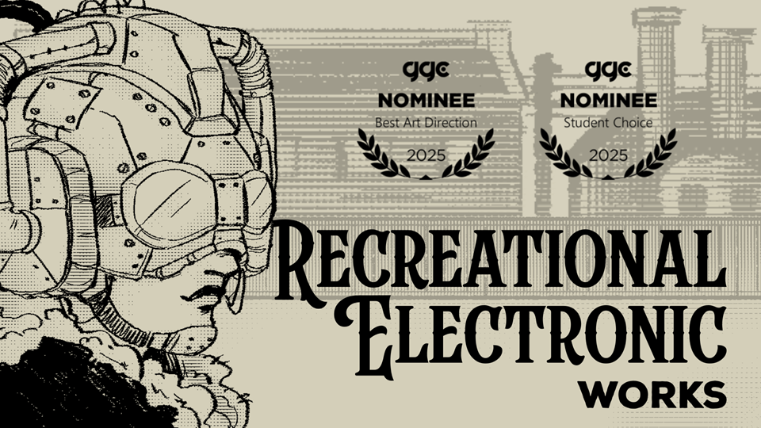
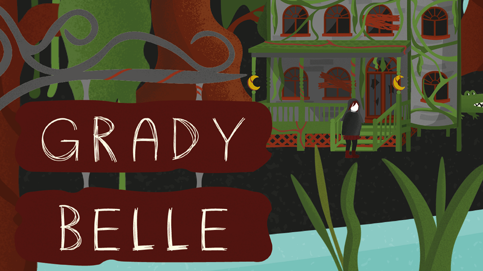
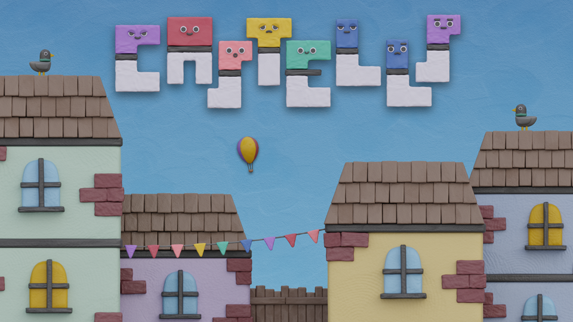
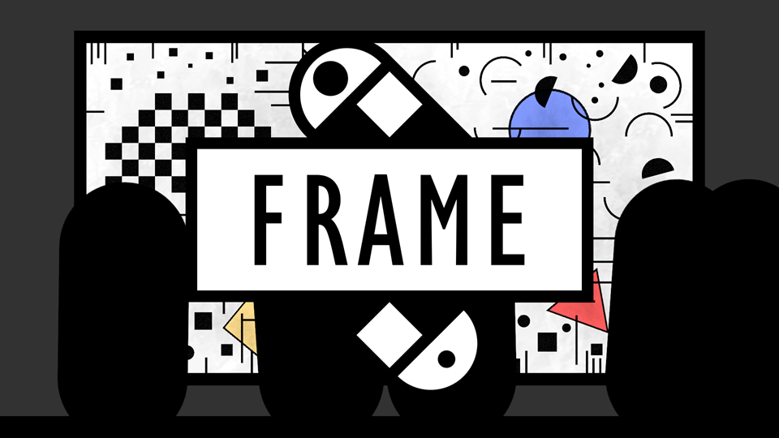
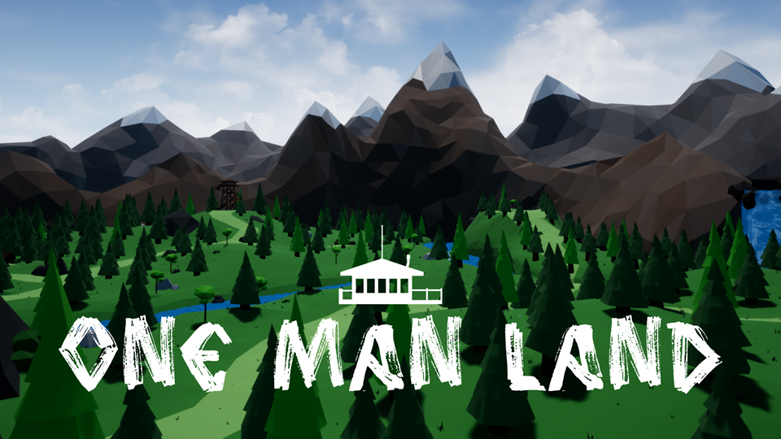

| Release | Team | Engine | Duration |
|---|---|---|---|
| Q2 2027 | 10+ | UE 5 | 5 months |
Role:
Game Design InternLearnings:
Conceptualising character interactions and area flow, world-building, writing NPC dialogue, grey-boxing basic platforming sections, Inkpot implementation with Unreal blueprints, play-testing.Summary:
Narrative-based adventure that follows Cami, a puerile punk chameleon, as she and her band navigate a world that's mysteriously losing its colour by the second. The area I contributed to sees Cami exploring the Mole Town and mine tunnels underneath the city of Isle of Dogs. Residents of the area are terrified of the latest occurrences, as the town is drowned in dullness and strange feathers. However, Cami is only set on entering the mines to steal the lights from a glowing mushroom, and finally get to perform her debut gig with The Hexes.
| Release | Team | Engine | Duration |
|---|---|---|---|
| May 2023 | 1 | Unity | 1 ½ years |
Role:
Solo DeveloperLearnings:
Finishing and releasing a complete game, "show don't tell", expression through minimalist visuals, fluid camerawork, controller adaptability, 2D level design.Summary:
Cinematic puzzle-platformer about growth and finding your place, with exclusive focus on environmental and interactive storytelling. Gameplay based on overcoming setbacks and getting knowledge from them, which is used to advance through the world. Subtler themes of grief, coming-of-age, or letting go are also present.Accolades:
Presented at the Talent Open Mic organised by DeviCAT, the Association of Video Game Professionals in Catalonia. Thesis on WAVA awarded full marks and the Computer Field Award at the 28th Premis Patronat.
| Release | Team | Engine | Duration |
|---|---|---|---|
| Jun 2025 | 3 | Unity | 4 months |
Role:
Original Concept / Technical Game Designer / Programmer / UX DesignerLearnings:
Counterfactualism and satire for social commentary, in-game economy balancing, designing an immersive user experience, conceptualising a unique setting.Summary:
Business simulator revolving around the what-if scenario of an early version of video games - known as RecElecs - being first introduced in Victorian London. Gameplay based on directing RecElec production, managing the workforce, and trying to keep a sinking factory afloat.Accolades:
Nominated for Best Art Direction and the Student Choice Award at the Gotland Game Conference 2025. Thesis on RecElec graded with a pass with distinction.
| Release | Team | Engine | Duration |
|---|---|---|---|
| Jan 2025 | 2 | Unity | 1 week |
Role:
Writer / Technical Game Designer / Sound Designer / ProgrammerLearnings:
Scoping and developing a complete project in a week, children's book-style writing, audio editing and layering to create an immersive soundscape, designing a satisfying user interface and experience.Summary:
Interactive tale about a lonesome haunted manor in the Louisiana bayou named Grady Belle, and its unlikely friendship over the years with a little girl named Bella. Gameplay based on simple click and drag interactions that enhance the storytelling.Accolades:
Graded with a pass with distinction.
| Release | Team | Engine | Duration |
|---|---|---|---|
| Jul 2025 | 2 | Unity | 1 week |
Role:
Gameplay Designer / Sound Designer / UX Designer / ProgrammerLearnings:
Reinventing established games, physics as the main mechanic, cultural representation through appealing visuals and immersive sound, responsive user interaction.Summary:
Reverse-jenga inspired by the traditional human towers built in Catalonia, known as "castells". Gameplay based on mounting objects to reach a specific goal through three levels with increasing difficulty.Accolades:
Finalist of the public voting for the Level Up Game Jam 2025. Ranked 13th overall, 5th for its art, and 17th for its sound, out of 135 entries.
| Release | Team | Engine | Duration |
|---|---|---|---|
| Nov 2025 | 1 | Unity | 2 weeks |
Role:
Solo DeveloperLearnings:
Microgames as poetic expression, rapid prototyping, abstract art direction, interactive storytelling.Summary:
Short split-screen platformer about connection amidst chaos. Gameplay based on making two geometric elements in an abstract painting meet each other. Can be played alone or co-op.Accolades:
Showcased at The Foundry in Belfast for the Press St[art] exhibition, as part of Late Night Art.
| Release | Team | Engine | Duration |
|---|---|---|---|
| Jun 2020 | 3 | UE 4 | 4 months |
Role:
Narrative Designer / Level Designer / Sound Designer / Gameplay DesignerLearnings:
3D level design, environmental storytelling, Unreal Blueprints scripting, low-poly 3D modeling and animating, in-game economy balancing.Summary:
After a terrible car accident, a man must explore, hunt, collect, craft, and survive in a forest that might be more alive than first expected. His one and only hope to be rescued is getting inside an abandoned watchtower.Accolades:
Awarded with full marks.